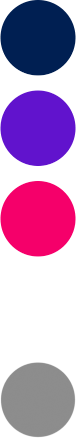
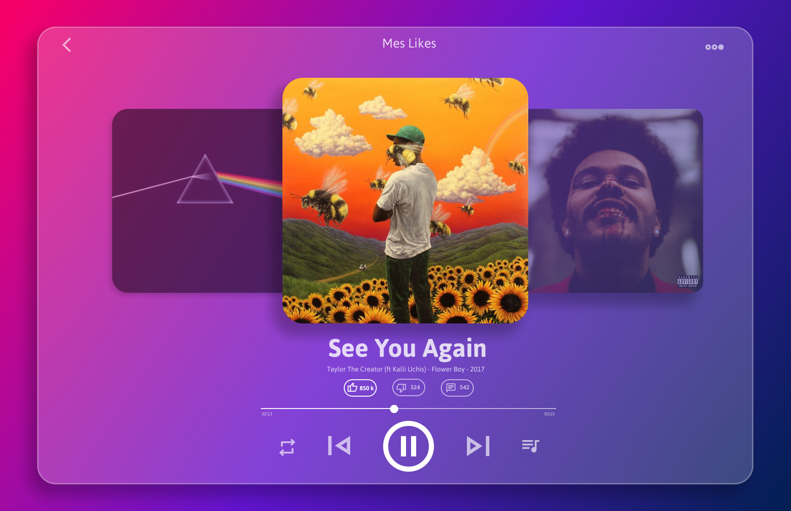
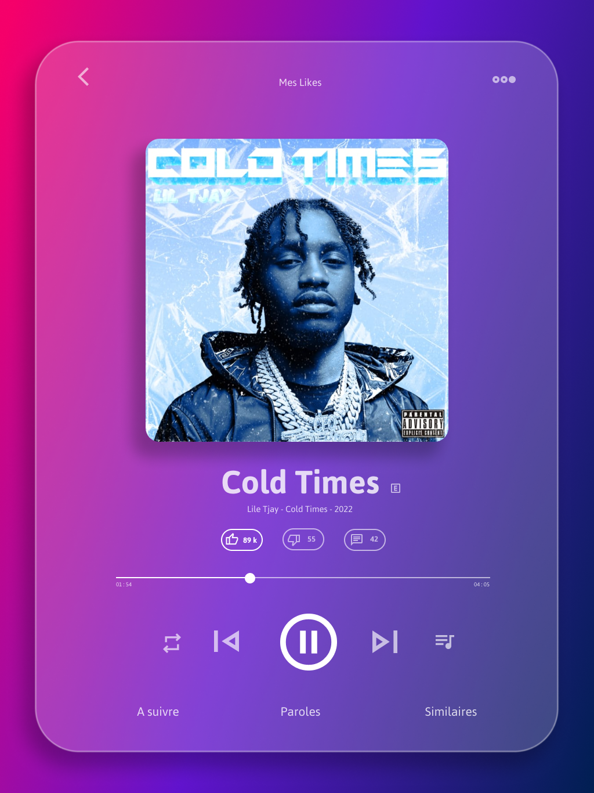

08 || Interface d'une application de streaming




Ce projet est une interface d'une plateforme de streaming sur le web et mobile avec une interface réalisée avec la technique du "glassmorphism" pour le fond.
Le "glassmorphism" est le fait d'avoir un fond ou des éléments qui laissent apparaître en transparence les éléments en arrière plan comme du verre. Le reste des éléments sont en blanc avec une opacité légèrement réduite puis avec une opacité à 100% lorsque l'utilisateur intéragit avec.